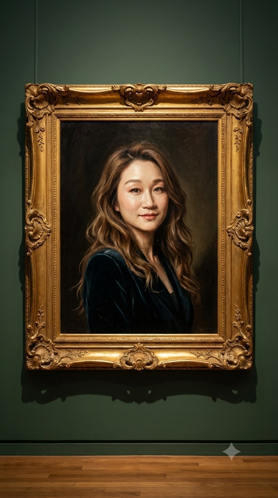

오늘의 프롬프트AI로사쌤 · 20번
액자에서 걸어 나오는 초상화, 사진에서 영상까지
먼저 사진을 만들고, 그 사진으로 영상을 만드는 두 단계예요. 남녀 누구나 쓸 수 있어요.
1단계 · 사진 만들기

제미나이나 챗GPT에 본인 사진을 먼저 올리고, 아래 프롬프트를 붙여넣으세요.
업로드한 사진 속 인물을 주인공으로 한 실사 사진. 얼굴을 그대로 반영하고 이목구비, 얼굴형, 헤어스타일, 안경을 바꾸지 말 것. 여성이면 여성, 남성이면 남성으로 표현. 은은하게 미소 짓는 얼굴.
장면: 미술관 벽에 걸린 커다란 금빛 고풍스러운 액자 안에 인물의 상반신 초상화가 유화로 그려져 있음. 붓 자국과 물감의 두께, 캔버스 결이 보이는 고전 유화 질감이지만 얼굴은 사진 속 인물과 똑같음. 그림 속 인물은 짙은 색 벨벳 의상을 입고 어두운 배경 앞에 앉아 있음. 액자 주변은 짙은 녹색 벽과 그림을 비추는 조명, 광택 나는 나무 바닥.
구도: 액자가 화면 대부분을 차지하는 정면 구도, 초상화의 얼굴이 크게 보이게. 그림 위에서 내려오는 따뜻한 조명.
고해상도 4K 실사, 유화의 붓 자국과 액자 조각 장식까지 선명하게, 이미지 안에 글자·명판·로고·워터마크 없음, 세로 9:16.
2단계 · 영상 만들기
1단계에서 만든 사진을 영상 도구에 첫 장면으로 올리고, 아래 프롬프트를 붙여넣으세요.
영상 내내 인물의 얼굴, 헤어스타일, 안경을 첫 프레임과 똑같이 유지.
0~3초: 고요한 미술관. 유화 속 인물이 눈을 한 번 깜빡이더니 눈동자를 좌우로 움직이며 주위를 살핌.
3~6초: 그림 속 인물이 몸을 앞으로 기울여 액자 밖으로 한 손을 내밀고, 액자 틀을 잡고 그림 밖으로 상체를 빼냄. 액자를 넘어오는 부분부터 유화 질감이 실제 사람의 피부와 옷감으로 바뀜.
6~9초: 인물이 액자에서 완전히 걸어 나와 미술관 바닥에 내려서고, 뒤의 액자에는 빈 배경만 남음. 옷을 가볍게 털며 기지개를 켬.
9~10초: 카메라를 보며 장난스럽게 웃고 검지를 입술에 대며 한국어로 속삭인다: "쉿, 비밀이에요."
카메라는 정면에서 인물이 나오는 만큼 천천히 뒤로 물러남. 소리는 미술관의 정적, 캔버스가 스치는 소리, 신비로운 현악 선율.
4K 고해상도 실사 영상, 10초 원테이크, 질감이 바뀌는 과정은 자연스럽게, 얼굴과 손 변형 없음, 대사는 입 모양에 맞춰 자연스럽게, 화면에 자막·글자·로고 없음.
출처 · AI로사쌤